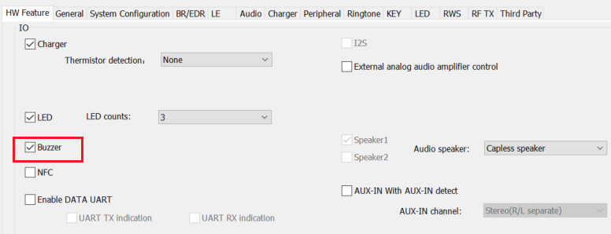
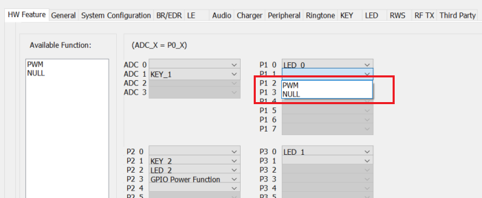
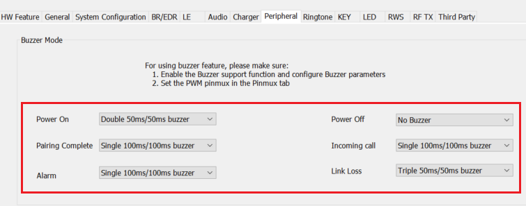

Buzzer Function Application Note
Revision History
| Version | Date | Description |
| V1.0.0.0 | 2021/10/21 | Stable Release |
Contents
Introduction
The purpose of this document is to give an overview of Buzzer function.
McuConfigTool Configuration
Buzzer function can be enabled in "HW Feature" page as shown in figure 1.

Figure 1: Buzzer function
Select PIN in "HW Feature" page to handle IO output as shown in figure 2.

Figure 2: PIN Setting
Enable Buzzer function and set mode in "Peripheral" page as shown in figure 3.

Figure 3: Buzzer Mode
Source Code Overview
This section discribes the main parts of Buzzer source code.
Buzzer isr timeout callback
when Buzzer isr timeout, this function will decide whether need to restart Buzzer according to Buzzer on/off and count
void buzzer_pwm_isr_timeout_callback(
T_PWM_HANDLE pwm_handle)
{
{
if (buzzer_data.buzzer_on)
{
buzzer_data.timer_count++;
if (buzzer_data.timer_count >= buzzer_data.timer_count_on)
{
buzzer_data.buzzer_on = 0;
buzzer_data.timer_count = 0;
}
}
else
{
buzzer_data.buzzer_count++;
if (buzzer_data.buzzer_count ==
BUZZER_TABLE[buzzer_data.buzzer_mode].count)
{
buzzer_data.buzzer_count = 0;
}
else
{
buzzer_data.buzzer_on = 1;
buzzer_data.pwm_low_count);
}
}
}
}
Buzzer parameter setting API
APP will set appropriate Buzzer parameter according to different Buzzer mode
void buzzer_check_freq(uint8_t mode)
{
{
case BUZZER_PWM_FREQ_1K:
.............
break;
case BUZZER_PWM_FREQ_2K:
.............
break;
case BUZZER_PWM_FREQ_3K:
.............
break;
default:
.............
}
}
Buzzer set mode API
APP will use this following API to set Buzzer mode. According to different scenario,set buzzer mode that include incoming call, power on,power off, enter pairing etc.
#define INCOMING_CALL_BUZZER app_cfg_const.buzzer_mode_incoming_call
#define POWER_ON_BUZZER app_cfg_const.buzzer_mode_power_on
#define POWER_OFF_BUZZER app_cfg_const.buzzer_mode_power_off
#define ENTER_PAIRING_BUZZER app_cfg_const.buzzer_mode_enter_pairing
#define PAIRING_COMPLETE_BUZZER app_cfg_const.buzzer_mode_pairing_complete
#define LINK_LOSS_BUZZER app_cfg_const.buzzer_mode_link_loss
#define ALARM_BUZZER app_cfg_const.buzzer_mode_alarm
void buzzer_set_mode(uint8_t mode)
{
{
if (mode == BUZZER_MODE_NONE)
{
}
else
{
buzzer_check_freq(mode);
if (buzzer_data.pwm_handle ==
NULL)
{
buzzer_data.pwm_handle =
pwm_create(
"app_buzzer", buzzer_data.pwm_high_count,
buzzer_data.pwm_low_count, false);
if (buzzer_data.pwm_handle ==
NULL)
{
return;
}
}
else
{
buzzer_data.pwm_low_count);
}
buzzer_data.buzzer_mode = mode;
buzzer_data.buzzer_on = 1;
buzzer_data.timer_count = 0;
buzzer_data.timer_count_off = BUZZER_TABLE[mode].off_duration * 10 *
1000;
buzzer_data.timer_count_on = BUZZER_TABLE[mode].on_duration * 10 * 10 / 5;
}
}
}